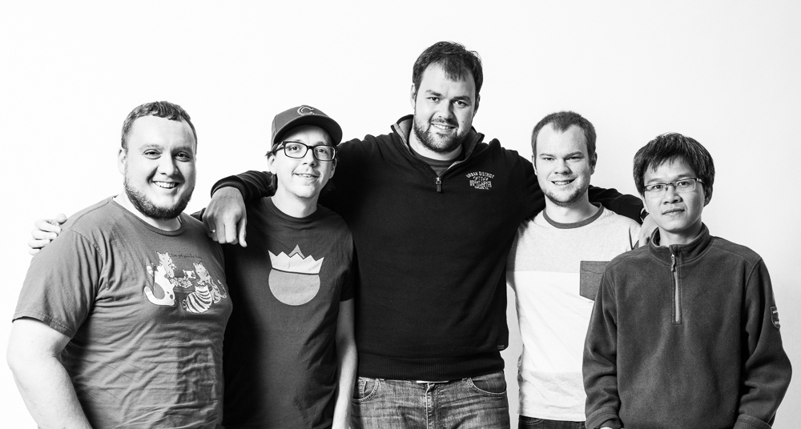

Drupal 8 Media Status
slides: http://nyc-camp.github.io/drupal-media-summit-update
Agenda
1. Intros
2. Background
3. D8 Media Initiative Update
4. D8 Media Ecosystem Updte
5. Getting Involved
6. Questions
Technical Appendices
1. Intros
Who's in the Audience?
Quick Summary
D8 Media ecosystem is the best Media's ever been in Drupal
That said, lots, & lots of work to be done
2. Background
Media is Challenging
Complex interdependent functionality
Traditional media types (photos, video, audio, etc.)
+ New media types (tweets instagram posts)
+ Local & external files
+ Media meta data
+ Caption variations
+ Caption variations
+ Revisioning
+ Translations
= Media is Tough Stuff!
Thank You Aaron Winborn!!
Literally wrote the book (and the code) on media in Drupal
Diagnosed with ALS in 2012
June 10, 1967 - March 24, 2015
Community Spotlight: drupal.org/node/2444367
drupal.org/aaron-winborn-award
Drupal 7
Functionality
Core provides fieldable files & images (big improvement over D6)
Limitations
Core File interactions limited to fields
Core Unused files deleted after 6 hours
Core cannot reuse files or add fields to files
Contrib provide lots of rich functionality ecosystem slow to get completed & documented
3. D8 Media Initiative Update
Our Mission
Create the world's best media solution available in any CMS/Framework
Media Initiative Plan
2-3+ year strategy created in 2013 & 2014 at
DrupalCon Prague BoF & NYC Camp 2014
D8 Media Initiative Goals
Collaborative architecture
Collaborative resources
Independent, reusable, and pluggable modules
Team & Community Communication
Momentum & Team Growth
Funding for stand-alone sprint weeks
Media Functionality Priorities
Pushing the envelope of what's possible in Drupal
Best in class editorial experience
Media Embedding / WYSWIYG
Media Browsing and selection
Media Storage
We need YOUR help!
Send us your user stories
Help needed with responding D8 community issues/requests
Current dev team needs to stay focused on D8 development
Will eventually need assistance for D7 backports
(more on Getting Involved later)
4. D8 Media Ecosystem Update
Where are We?
We're almost 2 yrs into our 3 year plan
Making steady progress, but would be ideal to accelerate
In need of more support
A Lot of Work to Get us Here
Summits
NYC Camp 2012, 2013, 2014 (x2), 2015 & (upcoming July) 2016
BADCamp 2014
DrupalCon New Orleans 2016
Sprints
NYC Camp 2013, 2014, 2015 & (upcoming July) 2016
MWDDS 2014, 2015
BADCamp 2014, 2015
DrupalCon 2014, 2015s
Lots of work left too
What is in Drupal 8 Core?
Several Improvements over D7
CKEditor + Basic image upload
Basic file listing page
Basic file usage page
Configurable file cleanup
Drupal 8 Core limitations
File interactions still limited to fields
Unused files deleted after 6 hours
Only basic WYSIWYG embedding support for images
Cannot reuse files
Cannot add fields to files
What is in Drupal 8 Contrib?
Short Answer: Lots!
Long Answer: It's Complicated (for now)
(with your help we can make it easy)
Implementing Media in D8
3 Approaches:
Distros (Thunder) & Starter configurations (Media & Pink Eye, etc)
Modular selection of needed modules
Extending Media (Crop API, Embed API, Thunder Distro, etc)
Modules Ecosystem
See https://www.gitbook.com/book/drupal-media/drupal8-guide/details
Achieving our Goals?
Collaborative architecture
Collaborative resources
Independent, reusable, and pluggable modules
Team & Community Communication (improving)
Momentum & Team Growth (so-so)
Funding for stand-alone sprint weeks (stand still)
5. Get Involved!
More Help is Needed
Likely that 3000+ hours of development remain
Lots of emerging examples:
Thunder DigiPub Distro (by Hubert Burda Media)
Brightcove Module by Provonix (see Kristoff's presentation on Thu)
Facebook Instant Articles Bof/Sprint at Drupal Camp NYC (Feb 2016, by NYC Community & lead by Joe Bachana/DPCI )
Upcoming Summits & Sprints
Dev Days 2016 Sprint (Jun 21-26?)
Dedicated week long sprints?
NYC Camp 2016 Media Summit (Mon Jul 8)
NYC Camp 2016 (Jul 8 -17)
Midwest Drupal Dev Summit (Aug 2016?)
DrupalCon Dublin Sprint/Summit (Sep 2016)
BAD Camp Sprint/Summit ()
Your Local Camp?
Join the Team!
Contribute
")
Become a Media Initiative Partner
- Media team is seeking partners to help fund sprints
- 100% of funds allocated to sprints (travel, accommodation, food)
- Each sprints cost ~$6000
- Aiming to raise $25,000 through small donations
- Gold ($1500), Silver ($1000), Bronze ($500), Community ($250)
- reach out to info@nyccamp.org
Special thanks to several of the consistent NYC Camp partners that have helped us get here: Acquia, Pantheon, FFW, Phase 2, Azri, Aten, EY NorthPoint Digital, Lullabot, Palantir
Resources
- drupalmedia.org
- Weekly scrum meetings on #drupal-media IRC
- github.com/drupal-media
- groups.drupal.org/media
- @davereid - drupal.org/u/dave-reid
- @slashrsm - drupal.org/u/slashrsm
- @willykaram - drupal.org/u/willyk
6. Questions?
Thank you!
D8 Media Ecosystem Appendix
Also see: Drupal 8 Media Guide Gitbook
https://www.gitbook.com/book/drupal-media/drupal8-guide/details
What is in Drupal 8 Core?
CKEditor + Basic image upload
Basic file listing page
Configurable file cleanup
What is in Drupal 8 Core?
CKEditor + Basic image upload
What is in Drupal 8 Core?
Basic file listing page
What is in Drupal 8 Core?
Basic file usage page
What is in Drupal 8 Core?
Configurable file cleanup
Drupal 8 Core limitations
File interactions still limited to fields
Unused files deleted after 6 hours
Only basic WYSIWYG embedding support for images
Cannot reuse files
Cannot add fields to files
What is in Drupal 8 Contrib?
CKEditor + Basic image upload
Basic file listing page
Configurable file cleanup
Entity Embed
Status: Usable
drupal.org/project/entity_embed
Completed:
- Backported to Drupal 7
- Improved UX of display configuration
Remaining:
- Integrate selection with Entity Browser
- Usability polish
- Abstract to extend Embed API
Embed API
Status: In Progress
Abstraction of reusable embedding concepts from Entity Embed.
URL Embed
Status: In Progress / GSOC 2015
Allows embedding of URLs using the WYSIWYG or link fields.
Using the Embed library from github.com/oscarotero/Embed
supports much more than just oEmbed
Transform pasted embeddable URLs and embed codes in WYSIWYG to normalized HTML tag.
Shortcode Embed
Status: In Planning
Custom "macros" to convert shortcodes to rendered HTML.
My callout text Entity Browser
Status: In Progress / Usable-ish
drupal.org/project/entity_browser
Completed:
- Architecture and API
- Integration with Inline Entity Form
- Views integration for selection (almost)
Remaining:
- UI for browser config entities
- Pager support in Views integration
- Constraints integration
- Multi-step selection
- Current selection
- ...
Inline entity form (IEF)
What?! But...
... isn't that Drupal Commerce stuff?!
Collaboration!
Reusable components!
Inline entity form (IEF)
Status: Usable
drupal.org/project/inline_entity_form
Completed:
- IEF form element
- Field widget (simple & complex)
- Entity browser integration
Remaining:
- Code cleanup
- Tests
File Entity
Status: In Planning / Usable-ish
drupal.org/project/file_entity
Extends core's file entity type with fieldability and add/edit/delete forms.
Need to regroup on module scope.
Unofficial port: github.com/md-systems/file_entity
Media Entity
Status: Usable
drupal.org/project/media_entity
Completed:
- Basic editorial UI
- Metadata handling API
- Lots of provider integrations already written: YouTube, Grab networks, AOL, Twitter, Instagram, local files
- Media library
Remaining:
- Integrate media library with Entity browser
- More powerful configuration UI
- More providers, leverage url_embed
- Rendering
Crop API
Status: In Progress
https://www.drupal.org/project/crop
Provides basic API for image cropping. This module won't do much by itself. Users should pick one of UI modules that utilize this API.
Completed:
- Basic API and cropping entity definitions
- Integrations with file and media entities
Remaining:
- UI (left for integrating modules?)
Dropzone JS integration
Status: Usable/In progress
https://www.drupal.org/project/dropzonejs
Nice multi uploader tool.
Completed:
- Form element
- Entity browser integration
Remaining:
- Image/File field integration
- Code cleanup
- Tests
Dropzone JS integration
Fallback Formatter
Status: Usables
drupal.org/project/fallback_formatter
Provides a field formatter that can attempt multiple formatters and the first one that returns output for each value wins.
Recycled Formatters
Status: In Planning
github.com/drupal-media/recycled_formatters
drupal.org/project/file_image_formatters
Allow formatters to be shared between image, file, and entity_reference fields.
File Download
Status: In Planning
URL for direct downloads of file entities, logging downloads, etc.
Media
Release Canditate
Becomes a "glue" module that brings all the components together.
Based on File Entity + Entity Browser config + Entity Embed button
Media Pinkeye*
Status: Usable - Estimate: 2-3 developer/weeks
drupal.org/project/media_pinkeye
First module bringing everything together to work out of the box
Based on Media Entity + Entity Browser config
We want to create provide more glue modules like this
* not a diseaseD7 Media Ecosystem
See Drupal.org Guide
File Entity
drupal.org/project/file_entity
File listing page
File Entity
Adding files (and archives of files)
File Entity
Managing files independently
File Entity
File types
File Entity
Managing fields on files
File Entity
Managing file display
File Entity
Simple HTML5 field formatters for audio and video files
Download link formatter
File Lock
This module allows you to "lock" files so they cannot be deleted.
Media
Media Browser widget for file and image fields
Media
Media Browser Upload
Media
Media Browser Views integration
Media
Media Browser Web
Media oEmbed
drupal.org/project/media_oembed
For remote resources (YouTube, Vimeo, etc)
Media CKEditor
drupal.org/project/media_ckeditor